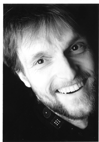

Keynote 1: Automatic Music Transcription: From music signals to music scores
Axel Roebel (Analysis/Synthesis team, IRCAM)

Abstract
Deriving the symbolic annotation of a piece of music form the audio signal is one of the important long term objectives of research in music information retrieval. The related signal processing task is denoted in short as: Automatic Music Transcription. It consists of deriving a complete score including the timing and frequency information of the notes (instruments and drums) present, and the instruments that have produced each note. A solution of this task would have an important impact on the research on MIR because it would open the door to use a symbolic music representation for the analysis of arbitrary audio signals. On the other hand one may note that the solution of the AMT task may benefit from results of many individual MIR tasks: e.g. tonality, chords, tempo, structure (notably repetitions), instrumentation.
The present talk aims to situate today’s research related to the AMT problem. It will start with an introduction into the problem and the main obstacles to be resolved. Then a brief summary of the history of research related to Automatic Music Transcription will be presented leading to a description of the state of the art. An overview of the algorithms that are currently employed will be given together with a few examples using existing software implementations. Finally, potential directions for improving the state of the art AMT algorithms will be discussed covering instrument models (ANR project SOR2), multi channel audio analysis (EU FP7 project 3DTVS), as well as music theoretic constraints.
Biography
Axel Roebel is the head of the research team analysis/synthesis of sound at IRCAM. He received the Diploma in electrical engineering from Hannover University in 1990 and the Ph.D. degree (summa cum laude) in computer science from the Technical University of Berlin in 1993. In 1994 he joined the German National Research Centre for Information Technology (GMD-First) in Berlin where he continued his research on adaptive modelling of time series of nonlinear dynamical systems. In 1996 he became assistant professor for digital signal processing in the communication science department of the Technical University of Berlin. Since 2000 he is working at IRCAM doing research on spectral domain algorithms for sound analysis, synthesis and transformation. In summer 2006 he was Edgar-Varese guest professor for computer music at the Electronic studio of the Technical University of Berlin and in 2011 he became the head of the analysis/synthesis team.
His research centres around problems in audio signal analysis, synthesis and transformation covering music and speech. His recent research projects are related to spectral modelling of musical instruments (ANR project Sample Orchestrator II), audio to midi transcription (industrially funded project Audio2Note), detection and classification of sound events in multi channel audio (EU FP7 project 3DTVS), modelling and transformation of sound textures (ANR project PHYSIS), synthesis of singing voice (ANR project CHANTER). He is the main author of IRCAM's SuperVP software library for sound analysis and transformation.
|
Keynote 2: Sound and Music Computing for Exercise and (Re-)habilitation
Ye Wang (Sound and Music Computing Lab, National University of Singapore)
Abstract
The use of music as an aid in healing body and mind has received enormous attention over the last 20 years from a wide range of disciplines, including neuroscience, physical therapy, exercise science, and psychological medicine. We have attempted to transform insights gained from the scientific study of music and medicine into real-life applications that can be delivered widely, effectively, and accurately. We have been trying to use music in evidence-based and/or preventative medicine. In this talk, I will describe three clinically-focused tools to facilitate the delivery of established music-enhanced therapies, harnessing the synergy of sound and music computing (SMC), mobile computing, and cloud computing technologies to promote healthy lifestyles and to facilitate disease prevention, diagnosis, and treatment in both developed countries and resource-poor developing countries. I will present some of our past and ongoing research projects that combine wearable sensors, smartphone apps, and a cloud-based therapy delivery system to facilitate music-enhanced physical and speech therapy, as well as the joys and pains working in such a multidisciplinary environment.
Biography
Ye Wang is an Associate Professor in the Computer Science Department at the National University of Singapore (NUS) and NUS Graduate School for Integrative Sciences and Engineering (NGS). He established and directed the sound and music computing (SMC) Lab (www.smcnus.org). Before joining NUS he was a member of the technical staff at Nokia Research Center in Tampere, Finland for 9 years. His research interests include sound analysis and music information retrieval (MIR), mobile computing, and cloud computing, and their applications in music edutainment and e-Health, as well as determining their effectiveness via subjective and objective evaluations. His most recent projects involve the design and evaluation of systems to support 1) therapeutic gait training using Rhythmic Auditory Stimulation (RAS), and 2) Melodic Intonation Therapy (MIT). He is also affiliated with the School of Computer Science of Fudan University and Harvard Medical School.
|